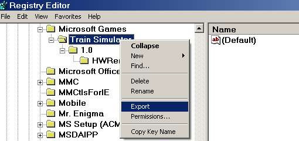
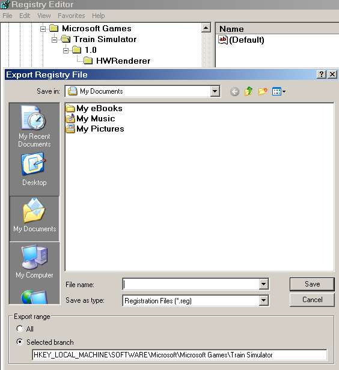
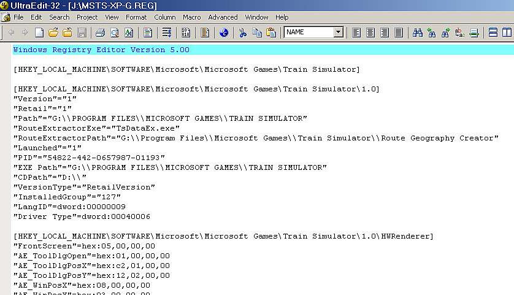

Changing the MSTS Registry Entry the Easy Way
by Otto Wipfel
The Procedure
I thought I'd show you how easy it is to create various Train Simulator Registry paths for all occasions.
Start | Run regedit and in the Registry Editor Edit / Find HWRenderer.
This will home in on the Train Simulator section: you can then Export its entire section after right-clicking on it, selecting Export and then saving it to a appropriately named .REG file (see image below).

Save the registry branch to your hard drive:

Having thus created a Master Registry Key for the installed MAIN MSTS it is easy to change all Path Drive Letters to another one with Find | Replace All in WORDPAD or another text editor and SAVE the new MSTS Registry Path key to another .REG file.

The MSTS Registry path can be changed to anything pointing to any MSTS folder copy containing a Train.exe, not necessarily located in a "Train Simulator" folder, which many do, having only one drive partition on their hard drive.
As long as:
- "Path"=
- "RouteExtractorPath"=
- "EXE Path"=
After creating Shortcuts for them on your Desktop it's then just a matter of left-double clicking on the appropriate one.
Also useful for restoring a messed up AE section of the Train Simulator registry, done in a split second.